Alex
Mobile user. Needs clear layout, readable labels and no horizontal scrolling at a narrow viewport.
Alex mobile-form evidencePersonal learning project
Accessibility-focused service forms, workflow, interoperability and local operational checks.
I built and tested a fictional council service-request journey in a local environment, covering Drupal, accessibility, internal workflow, structured data, Mendix learning evidence, SQL and operational support, plus a clearly labelled Boomi-oriented design.
Project snapshot
Problem and objective
The fictional service need is simple: a resident reports a public-highway problem, such as a faulty streetlight. The form needs to be clear, accessible and honest about what information is required.
Urgent risks need extra detail, operational colleagues need a readable internal view, and structured data should be suitable for later integration and support work.
Users and needs
These reviews helped keep the work grounded in plausible needs, but they were not formal usability research with recruited participants.
Mobile user. Needs clear layout, readable labels and no horizontal scrolling at a narrow viewport.
Alex mobile-form evidenceKeyboard and accessibility considerations. Needs visible focus, semantic form structure and usable error behaviour.
Priya error-state evidencePlain-language needs. Needs short, direct wording and examples that make the form easier to complete.
Tom form-content evidenceInternal operational view. Needs the submitted details, status and next action presented clearly.
Sam workflow evidenceService journey
The page follows the fictional request from resident report through validation, structured data, internal review and downstream-system design evidence.
Citizen Webform
The fictional resident reports a public-highway problem through a Drupal Webform that collects the information needed for triage.
The form asks for the problem type, location, postcode, optional streetlight reference, risk information, additional details and fictional contact details. If the resident says there is an immediate safety risk, an additional risk-details question is shown.
The wording was reviewed for plain English. Help text and confirmation wording stay clear without displaying a fixed fictional reference number.
Mobile form evidence
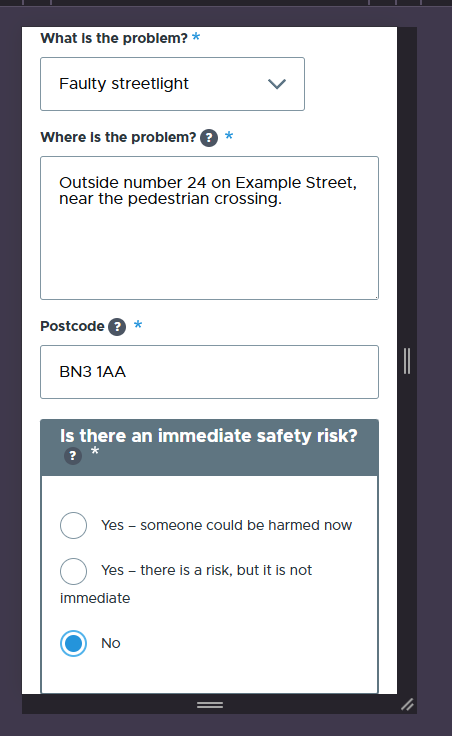
Conditional logic and PHP validation
Selecting an immediate safety risk reveals the risk-details field, and the field becomes required while it is visible. Whether a populated value is cleared after the condition changes has not been verified and is not claimed here.
Custom PHP validation rejected ABC123. The fictional postcode BN3 1AA was accepted, while BN3 1 AA remained invalid. The rule trims surrounding whitespace, converts letters to uppercase and collapses repeated whitespace before validating. This is not comprehensive postcode or address verification.
Invalid postcode-shaped input
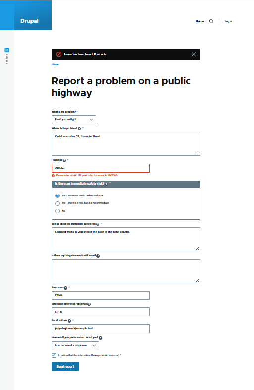
Valid fictional postcode
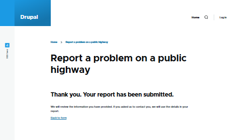
BN3 1AA was accepted.
Open confirmation evidence
Accessibility testing and iterative improvement
The project was not certified as fully WCAG compliant, and dedicated end-to-end screen-reader testing was not completed.
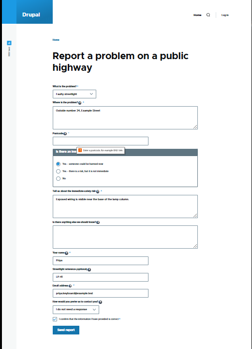
Historical axe and WAVE records are retained as bounded technical context; the public-facing evidence above is limited to the visible form and confirmation states. The project makes no screen-reader, certification or full-WCAG-compliance claim.
YAML and JSON
The Drupal Webform configuration was exported as YAML evidence. Created a read-only Drupal GET endpoint returning one fixed fictional service-request record.
Short excerpt from the local Drupal Webform YAML export.
id: report_public_highway_problem
elements:
postcode:
'#type': textfield
'#title': Postcode
risk_details:
'#states':
visible:
':input[name="immediate_safety_risk"]':
value: yes_immediate
settings:
confirmation_type: pageConfiguration was reviewed alongside current runtime checks; the export is not presented as production-deployment evidence.
Short excerpt from the saved fixed fictional JSON response.
{
"reference": "LSR-DEMO-10482",
"requestType": "faulty_streetlight",
"location": {
"postcode": "BN3 1AA"
},
"status": "new"
}Internal case preview and workflow
The internal preview renders the tested JSON endpoint into request overview and detail views. It also demonstrates a session-only status workflow from New to Closed, with static next-action mapping, activity entries and refresh reset behaviour.
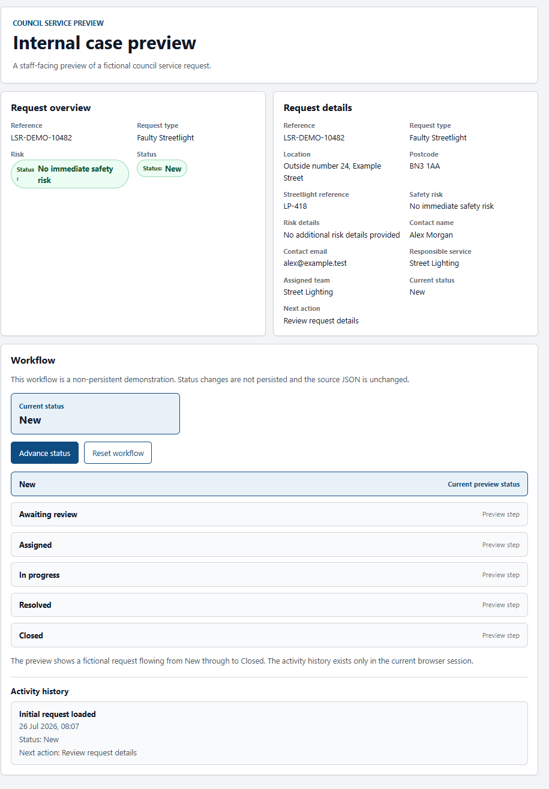
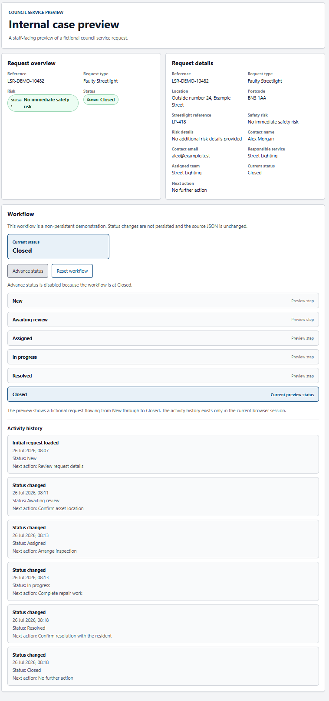
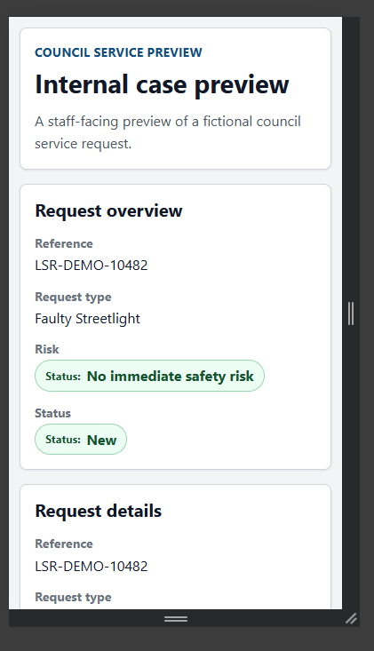
Twig confirmation override
A Webform-specific Twig confirmation template was registered for report_public_highway_problem. It presents static success content in clear British English, does not apply globally, and desktop and mobile results were evidenced.
The template does not alter validation, submission storage, conditional logic or workflow behaviour. It does not display submitted values or a dynamic reference.
Desktop confirmation
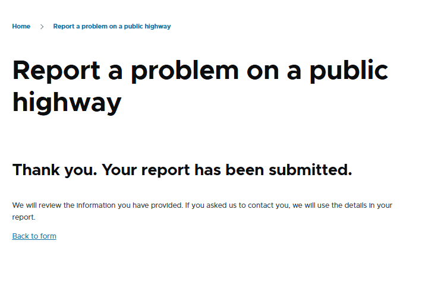
Mobile confirmation
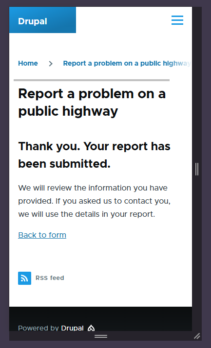
Local Mendix learning application
Created a screenshot-supported local Mendix learning prototype using fictional manually entered data; the source package is not included in this repository.
The screenshots record a separate local prototype with a ServiceRequest entity, a RequestStatus enumeration, overview and edit pages, and a manually invoked status-advance microflow. It does not import Drupal JSON or demonstrate a live integration.
This is a separate manually exercised prototype sequence, not the Drupal preview's status mapping.
Domain model
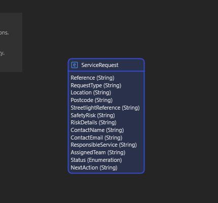
Microflow
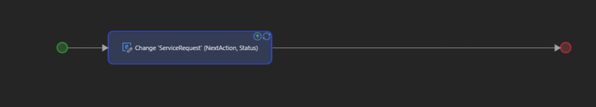
Request overview
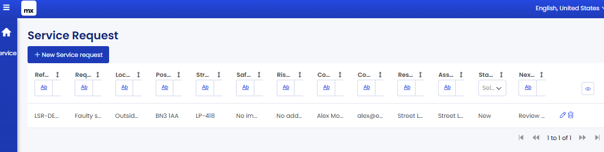
Closed status
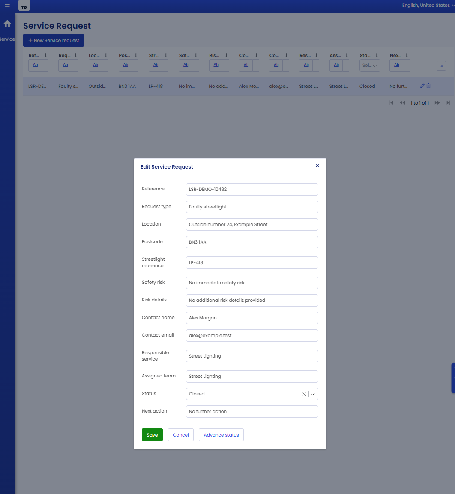
Interoperability
Generated well-formed XML and executed XPath checks against the fictional service-request record. Generated well-formed mock SOAP 1.1 request and response messages as an interoperability exercise.
PHP DOMDocument and DOMXPath were used to generate and check structured fictional data. XML documents and mock SOAP messages were well-formed, and XPath returned expected fictional values.
The raw source status new was preserved through the XML and mock SOAP evidence. A real integration would need an explicit mapping to consuming-system enumeration values.
SQL and data evidence
Built and executed a fictional SQLite data model demonstrating joins, aggregation, transactions and constraints. The current verification ran the existing demonstration from a temporary copy, not against the tracked SQLite file.
SELECTORDER BYJOINGROUP BYDevOps and operational support
Historical local operational evidence covers DDEV and Drupal health checks, route checks, syntax checks, configuration status, backup handling, isolated temporary-database restore and incident-runbook notes.
This is sanitised local-development evidence only. The restore validation was data-level, not full application-level recovery, and it is not production DevOps, monitoring, high availability or disaster-recovery evidence.
Boomi-oriented design
No Boomi tenant, process, connector, Atom/runtime, execution or deployment was used.
Produced a Boomi-oriented process-design study; no Boomi tenant process was executed. The study proposes profiles, field mapping, validation decisions, routing, a SOAP connector concept, error handling, retry classification and test scenarios. It is grounded in separately tested JSON, XML, XPath and mock SOAP evidence.
Evidence and testing
The repository contains implementation records, runtime checks, fictional data examples, visual evidence and bounded design material. Each item must be used only within its stated public-safety classification and technical boundary.
Drupal Webform configuration, PHP validation, JSON endpoint, internal preview, workflow and Twig override.
Browser results, accessibility checks, syntax checks, parser checks and saved command output.
Final audit documents supported claims, unsupported claims, limitations and portfolio source guidance.
The case study is intentionally selective: private technical material, local transcripts and release-decision items are not presented as public evidence.
Key decisions
Limitations
Local learning environment
No real citizen data
No production deployment
No formal user research
No full screen-reader testing
No full WCAG-compliance claim
Local-only Mendix app
No live Drupal-to-Mendix integration
No Boomi execution
No live SOAP endpoint
No XSLT implementation
SQLite only
No load or performance testing
Data-level restore validation only
What I learned
I learned how quickly a simple service journey becomes a set of linked decisions: wording, validation, conditional logic, accessible error handling, internal views and data shape all affect each other.
I also learned the value of separating application logic from integration design. The most useful evidence is not just what works, but what is clearly labelled as local, fictional, mocked, design-only or future work.
Next steps
{kind=link}
{kind=link}
{kind=link}
{kind=link}
{kind=link}
{kind=link}
{kind=link}
{kind=link}
{kind=link}
{kind=link}
{kind=link}
{kind=link}
{kind=link}
{kind=link}